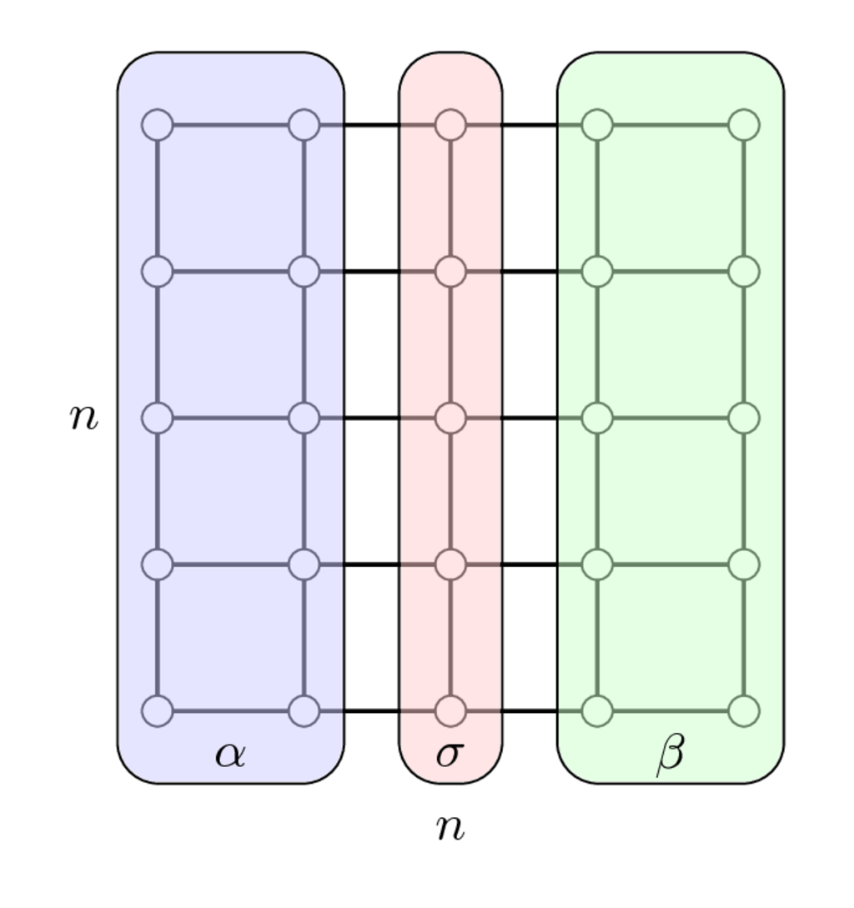
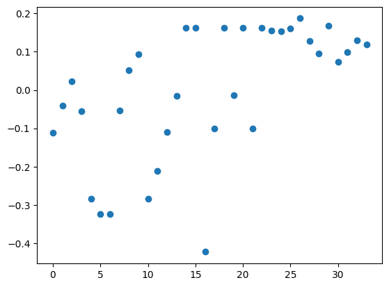

Plan for this week: how to solve large sparse linear systems
Direct methods (start today and continue in the next lecture)
LU decomposition
Number of reordering techniques to minimize fill-in
Krylov methods
Plan for today
Sparse direct solvers:
LU decomposition of sparse matrices
fill-in of L and U factors
nested dissection
spectral clustering in details
Direct methods for sparse matrix: LU decomposition
Why sparse linear systems can be solved faster, what is the technique?
In the LU factorization of the matrix A the factors L and U can be also sparse:
A = L U
And solving linear systems with sparse triangular matrices is very easy.
Note that the inverse matrix to sparse matrix is not sparse!
import numpy as npimport scipy.sparse as spspn =4ex = np.ones(n);#a = spsp.spdiags(np.vstack((ex, np.random.rand(n), np.random.rand(n))), [-1, 0, 1], n, n, 'csr'); a = spsp.spdiags(np.vstack((-ex, 2*ex, -ex)), [-1, 0, 1], n, n, 'csr');#a = spsp.spdiags(np.vstack((-ex, 2*ex, -ex), np.random.rand(n)), [-1, 0, 1], n, n, 'csr'); b = np.array(np.linalg.inv(a.toarray()))print(a.toarray())print(b)np.linalg.svd(b[:3, 4:])[1]
If we eliminate elements from the top to the bottom, then we will obtain dense matrix. However, we could maintain sparsity if elimination was done from the bottom to the top.
Example of dense factors after LU
Given matrix A=A^*>0 we calculate its Cholesky decomposition A = LL^*.
How to make factors sparse, i.e. to minimize the fill-in?
Why permutations can reduce fill-in? Here the example…
We need to find a permutation of indices so that factors are sparse, i.e. we build Cholesky factorisation of PAP^\top, where P is a permutation matrix.
We reduce problem to solving smaller linear systems with A_{11} and A_{22}
What we can do to minimize fill-in?
Reordering the rows and the columns of the sparse matrix in order to reduce the number of nonzeros in L and U factors is called fill-in minimization.
Unfortunately, this paper by Rose and Tarjan in 1975 proves that fill-in minimization problem is NP-complete.
But, many heuristics exist:
Markowitz pivoting - order by the product of nonzeros in column and row and stability constraint
Minimum degree ordering - order by the degree of the vertex
Cuthill–McKee algorithm (and reverse Cuthill-McKee) - reorder to minimize the bandwidth (does not exploit graph representation).
Nested dissection: split the graph into two with minimal number of vertices on the separator (set of vertices removed after we separate the graph into two distinct connected graphs). Complexity of the algorithm depends on the size of the graph separator. For 1D Laplacian separator contains only 1 vertex, in 2D - \sqrt{N} vertices.
How can we find permutation?
Key idea comes from graph theory
Sparse matrix can be treated as an adjacency matrix of a certain graph: the vertices (i, j) are connected, if the corresponding matrix element is non-zero.
General purpose approach to ordering the elements of sparse matrix that will be eliminated
The Markowitz merit for every non-zero element with indices (i, j) is computed as (r_i - 1)(c_j - 1), where r_i is number of nonzeros elements in the i-th row and c_j is a number of non-zero elements in the j-th column
This value is an upper abound on the fill-in after eliminating the (i, j) element. Why?
We can order elements with respect to these values, select the one with minimum value, eliminate it and update matrix. What about stability?
Then re-compute these values and repeat the procedure
This method gives us the permutations of rows and columns and sparse factors
Main drawback is efficient supporting number of nnz in every row and column after matrix update without complete re-calculating
De facto standard approach in solving Linear programming (LP) problems and their MILP modifications
What if consider only neighbours? We get minimal degree ordering!
The idea is to eliminate rows and/or columns with fewer non-zeros, update fill-in and then repeat. How it relates to Markowitz pivoting?
Efficient implementation is an issue (adding/removing elements).
Current champion is “approximate minimal degree” by Amestoy, Davis, Duff.
It is suboptimal even for 2D PDE problems
SciPy sparse package uses minimal ordering approach for different matrices (A^{\top}A, A + A^{\top})
But in these methods we ignore the knowledge of good structure for sparse LU! Let’s exploit it explicitly in the method!
How to formalize reduction to block arrowhead form?
Definition. A separator in a graph G is a set S of vertices whose removal leaves at least two connected components.
Separator S gives the following ordering for an N-vertex graph G: - Find a separator S, whose removal leaves connected components T_1, T_2, \ldots, T_k - Number the vertices of S from N − |S| + 1 to N - Recursively, number the vertices of each component: T_1 from 1 to |T_1|, T_2 from |T_1| + 1 to |T_1| + |T_2|, etc - If a component is small enough, enumeration in this component is arbitrarily
Separator and block arrowhead structure: example
Separator for the 2D Laplacian matrix
A_{2D} = I \otimes A_{1D} + A_{1D} \otimes I, \quad A_{1D} = \mathrm{tridiag}(-1, 2, -1),
is as follows

Once we have enumerated first indices in \alpha, then in \beta and separators indices in \sigma we get the following matrix
Multilevel recursive bisection (heuristic, currently most practical) (review and paper). Package for such kind of partitioning is called METIS, written in C, and available here
One of the ways to construct separators – spectral graph partitioning
The idea of spectral partitioning goes back to Miroslav Fiedler, who studied connectivity of graphs (paper).
We need to split the vertices into two sets.
Consider +1/-1 labeling of vertices and the cost
E_c(x) = \sum_{j} \sum_{i \in N(j)} (x_i - x_j)^2, \quad N(j) \text{ denotes set of neighbours of a node } j.
We need a balanced partition, thus
\sum_i x_i = 0 \quad \Longleftrightarrow \quad x^\top e = 0, \quad e = \begin{bmatrix}1 & \dots & 1\end{bmatrix}^\top,
and since we have +1/-1 labels, we have
\sum_i x^2_i = n \quad \Longleftrightarrow \quad \|x\|_2^2 = n.
Graph Laplacian
Cost E_c can be written as (check why)
E_c = (Lx, x)
where L is the graph Laplacian, which is defined as a symmetric matrix with
L_{ii} = \mbox{degree of node $i$},
L_{ij} = -1, \quad \mbox{if $i \ne j$ and there is an edge},
and 0 otherwise.
Rows of L sum to zero, thus there is an eigenvalue 0 and gives trivial eigenvector of all ones.
Eigenvalues are non-negative (why?).
Partitioning as an optimization problem
Minimization of E_c with the mentioned constraints leads to a partitioning that tries to minimize number of edges in a separator, while keeping the partition balanced.
We now relax the integer quadratic programming to the continuous quadratic programming
The solution to the minimization problem is given by the eigenvector (called Fiedler vector) corresponding to the second smallest eigenvalue of the graph Laplacian. Indeed,
\min_{\substack{x^\top e =0, \\ \|x\|_2^2 = n}} (Lx, x) = n \cdot \min_{{x^\top e =0}} \frac{(Lx, x)}{(x, x)} = n \cdot \min_{{x^\top e =0}} R(x), \quad R(x) \text{ is the Rayleigh quotient}
Since e is the eigenvector, corresponding to the smallest eigenvalue, on the space x^\top e =0 we get the second minimal eigevalue.
The sign x_i indicates the partitioning.
In computations, we need to find out, how to find this second minimal eigenvalue –– we at least know about power method, but it finds the largest. We will discuss iterative methods for eigenvalue problems later in our course.
This is the main goal of the iterative methods for large-scale linear problems, and can be achieved via few matrix-by-vector products.
import numpy as np%matplotlib inlineimport matplotlib.pyplot as pltimport networkx as nxkn = nx.read_gml('karate.gml')print("Number of vertices = {}".format(kn.number_of_nodes()))print("Number of edges = {}".format(kn.number_of_edges()))nx.draw_networkx(kn, node_color="red") #Draw the graph
The 2 smallest eigenvalues = [2.52665709e-17 4.68525227e-01 9.09247664e-01]
#plt.scatter(np.arange(len(eigvec[:, 1])), np.sign(eigvec[:, 1]))plt.scatter(np.arange(len(eigvec[:, 1])), eigvec[:, 1])plt.show()print("Sum of elements in Fiedler vector = {}".format(np.sum(eigvec[:, 1].real)))

Sum of elements in Fiedler vector = -8.493206138382448e-15
Here we call SciPy sparse function to find fixed number of eigenvalues (and eigenvectors) that are smallest (other options are possible)
Details of the underlying method we will discuss soon
Fiedler vector gives simple separation of the graph
To separate graph on more than two parts you should use eigenvectors of laplacian as feature vectors and run some clustering algorithm, e.g. k-means
From Fiedler vector to separator
Elements of eigenvector v corresponding to the second smallest eigenvalue of the Laplacian indicate the partitioning of vertices
If we select some small positive \tau >0, then we can split the vertices in three groups
v_i < -\tau
v_i \in [-\tau, \tau]
v_i > \tau
After that the separator is composed with the vertices corresponding to elements of v such that v_i \in [-\tau, \tau]
The size of separator can be tuned by the magnitude of \tau
The distribution of elements in v is important to identify the size of separator
Fiedler vector and algebraic connectivity of a graph
Definition. The algebraic connectivity of a graph is the second-smallest eigenvalue of the Laplacian matrix.
Claim. The algebraic connectivity of a graph is greater than 0 if and only if a graph is a connected graph.
Practical problems
Computing bisection recursively is expensive.
As an alternative, one typically computes multilevel bisection that consists of 3 phases.
Graph coarsening: From a given graph, we join vertices into larger nodes, and get sequences of graphs G_1, \ldots, G_m.
At the coarse level, we do high-quality bisection
Then, we do uncoarsening: we propagate the splitting from G_k to G_{k-1} and improve the quality of the split by local optimization algorithms (refinement).
Practical problems (2)
Once the permutation has been computed, we need to implement the elimination, making use of efficient computational kernels.
If in the elemination we will be able to get the elements into blocks, we will be able to use BLAS-3 computations.
It is done by supernodal data structures:
If adjacent rows have the same sparsity structure, they can be stored in blocks:
Also, we can use such structure in efficient computations!
Ordering is important for LU fill-in: more details in the next lecture
Markowitz pivoting and minimal degree ordering
Orderings from SciPy sparse package
Separators and how do they help in fill-in minimization
Nested dissection idea
Fiedler vector and spectral bipartitioning
Plan for the next lecture
Basic iterative methods for solving large linear systems
Convergence
Acceleration
Questions?
from IPython.core.display import HTMLdef css_styling(): styles =open("./styles/custom.css", "r").read()return HTML(styles)css_styling()
---------------------------------------------------------------------------FileNotFoundError Traceback (most recent call last)
Cell In[1], line 5 3 styles =open("./styles/custom.css", "r").read()
4return HTML(styles)
----> 5css_styling()
Cell In[1], line 3, in css_styling() 2defcss_styling():
----> 3 styles =open("./styles/custom.css","r").read()
4return HTML(styles)
File ~/miniconda3/envs/teaching/lib/python3.11/site-packages/IPython/core/interactiveshell.py:282, in _modified_open(file, *args, **kwargs) 275if file in {0, 1, 2}:
276raiseValueError(
277f"IPython won't let you open fd={file} by default " 278"as it is likely to crash IPython. If you know what you are doing, " 279"you can use builtins' open." 280 )
--> 282returnio_open(file,*args,**kwargs)FileNotFoundError: [Errno 2] No such file or directory: './styles/custom.css'
 and
and